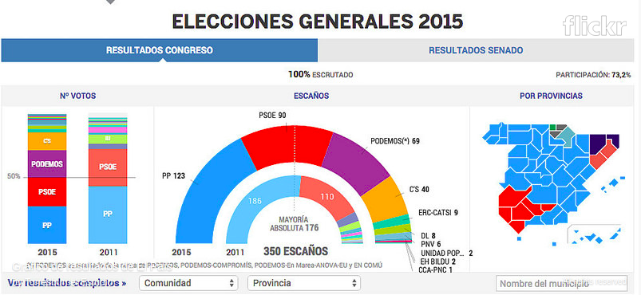
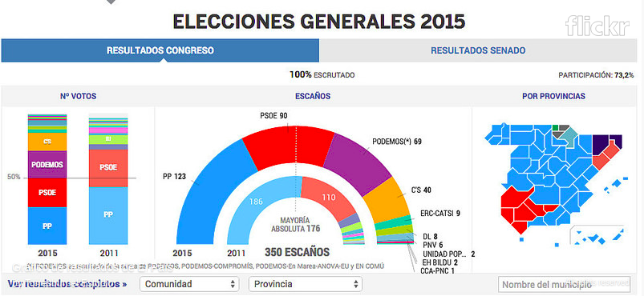
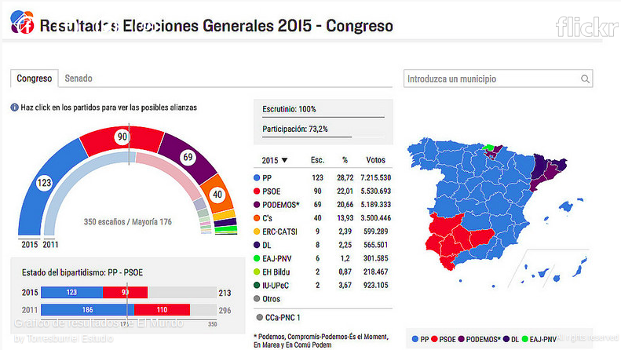
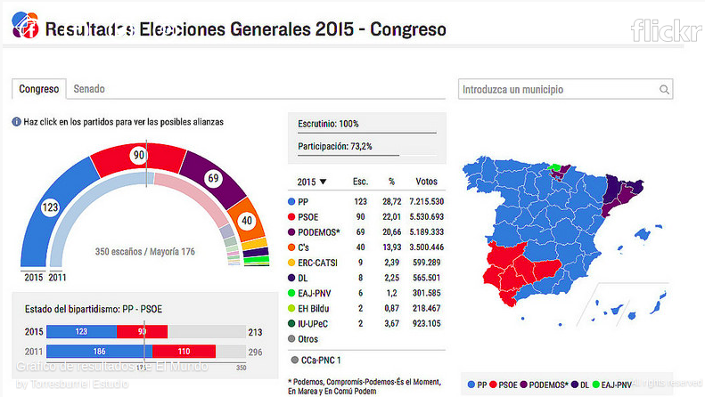

Visualizaciones legislativas¶
Ver ejemplos: Interesante análisis de visualizaciones varias de medios europeos.
 
  


hemiciclo-lndata-2015
Visualización de ciudades y partidos de el Pais en 2015.

viz-conectados-circuitos-y-partidos
Con código D3 Hemicilio simple: http://bl.ocks.org/tomgp/9212008
D3 Hemicilio con íconos:
http://bl.ocks.org/michalskop/2e2a2aed537d1a5f03c3
Posible referencia:
http://olcreativa.lanacion.com.ar/dev/test/votaciones/